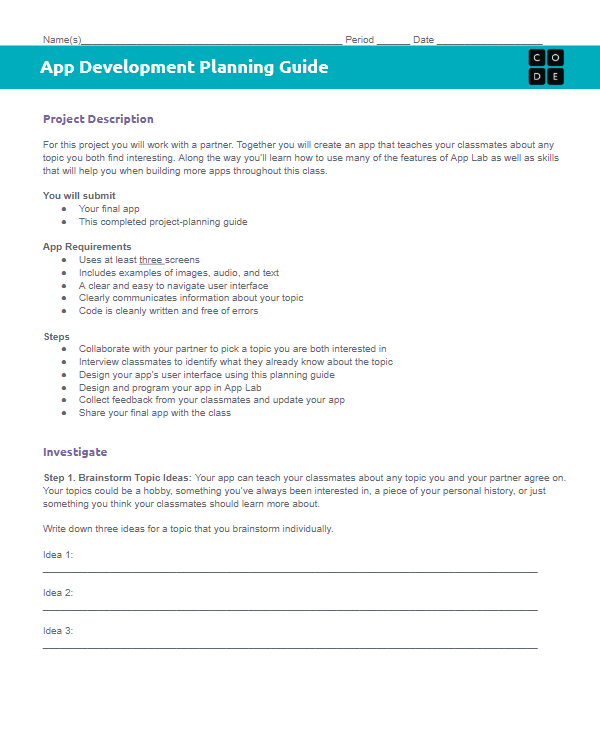

Think of times when you have received helpful feedback on school work, a hobby, or a sport. What makes feedback good? What makes feedback bad?
Today you will keep working on your apps, and you will also start getting feedback from your classmates. That feedback is what turns a working app into a good one.
It is fine if your app is not finished yet. Feedback is useful at any point in the process. We will form focus groups of two teams. In each round, one team is Team A and the other is Team B, then you swap.
Team A lets Team B test their app.
Team A watches Team B as they use the app, without stepping in.
Team A writes down improvements as they come to mind.
Team A interviews Team B, asking for specific improvements to make.
Swap roles and run through it again.

Testing and feedback is Step 6 of your planning guide
Merge teams to form a focus group of two or three teams, then take turns as Team A and Team B.
Share your tab and use the other team’s app out loud, so Team A can see exactly what you do.
Watch quietly, note improvements as they occur to you, then interview Team B for specific changes to make.
Run the five-step protocol from the previous slide, then swap roles so every team both tests and is tested.
Return to your group and pick at least one improvement to make to your app based on the feedback you received.
Write it down in the Planning Guide in Step 7 so you remember what you decided to change and why.
Now move on to dot 2. Set up a team with your partner:
In the top right corner, click your name.
Click Pair Programming.
Choose your partner’s name.
Alternate the driver and navigator roles every five minutes.
Make sure to Run and click Finish when you complete each level. This gives the navigator a copy of your work.
Why is it important to get feedback from others while building your app? What is the value of getting that feedback even if you are not finished yet?
Feedback and testing are important parts of making good software. They make sure our apps actually work the way we designed them, and they help us make gradual improvements.
Next class you will have a chance to make some final touches on your apps before we submit them.